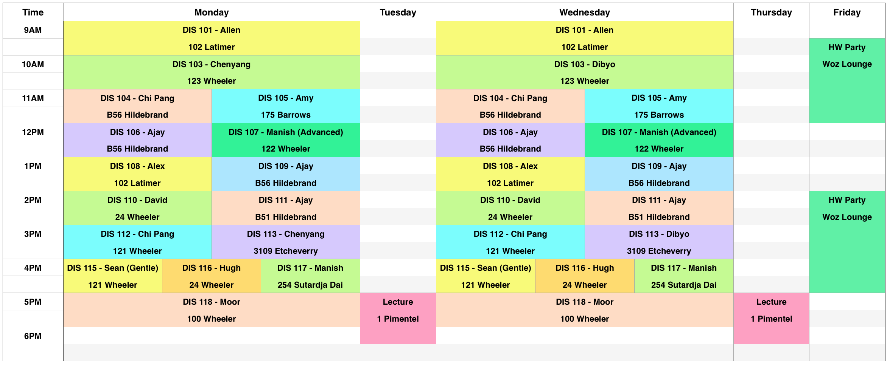

CS70
Discrete Mathematics and Probability Theory
Spring 2015
Instructor and Lecture
- Instructor: Umesh Vazirani
- Lecture: Tuesday and Thursday, 5:00-6:30 pm, 1 Pimentel
- Office: 671 Soda Hall
- Office hours: Monday 1:15-2:00 pm, Tuesday 6:30-7:15 pm
Course Syllabus
See syllabus below.
Announcements
- There will be HKN course survey at the beginning of class on Tuesday, 04/21.
- Note 19 has been revised to include the variance calculations.
Key Information
- Typically, homework assignments are posted on Monday at noon and are due the following Monday at noon.
- Homework will be self-graded. Solutions will be out on Monday at 12:30 pm, and self-grading is due on Thursday at noon.
- There will be weekly online homework that is designed to help you get up to speed for the written homework.
- Midterm 1: February 17, 5-7 pm
- Midterm 2: March 31, 5-7 pm
- If you are enrolled in the course you will soon get an email inviting you to sign up for the cs70 piazza account.
- List of GSIs and readers, including schedule of sections and office hours.
- Please read the complete course policies.
- Some useful advice.
Homework
- Homework is released on Monday at 12 PM (noon) and due the following Monday at 12 PM (noon).
- To submit the homework number N, you should upload a file named
hwN.pdf to the instructional servers, and use the command: submit hwN
- Self-grading starts as soon as solutions are released, around Monday at 12 PM (noon), and ends on Thursday at 12 PM (noon).
- To submit the selfgrades for homework number N, you should upload a file named
hwN_grades.txt to the instructional servers, and use the command: submit hwN_grades
- It is recommended that you use the provided grading forms to generate the
hwN_grades.txt file.
Homework parties
Times: Friday 2:00-5:00pm in the Wozniak Lounge (430 Soda Hall)
Every week in the Wozniak Lounge, there will
be a "homework party." This is completely optional. GSIs will be
present in shifts as will some readers. Students are expected to
help each other out, and if desired, form ad-hoc "pickup" homework groups
in the style of a pickup basketball game.
The Woz is a relatively big space and if the weather is nice, we
can also access the patio outside. But if the room is crowded,
excercise good judgement and make room for others by leaving if you
can find an alternative source of assistance. When the room is not
crowded, people from the class are welcome to just hang out as long as
they aren't bothering other people. Some social games might be
available.
Homework assignments
Online homework
- Online homework can be found at https://cs70sp15.tk.
- You will need your gradescope credentials to login.
- If you have multiple gradescope accounts, use the one which is registered for CS 70 on gradescope itself.
Exams
Notes
There is no textbook for this class. Instead, there is a set of fairly comprehensive lecture notes. The notes are undergoing a major revision this semester, so notes posted well in advance of lecture may change closer to the date. So make sure you revisit the notes after lecture. Note 0 is background material that you should make sure you understand before the first lecture. Each note may be covered in one or more lectures.
Discussion Sections
Click here for a list of the GSIs and their discussion sections.
You are free to choose which discussion section you want to attend. All sections will cover the same basic material, but different GSIs might have different approaches to it.
Discussion handouts
Weekly schedule

January
- Jan 20: Propositions + quantifiers
- Jan 22: Proofs
- Jan 27: Induction
- Jan 29: Induction (continued) + recursion
February
- Feb 3: Stable marriage
- Feb 5: Graphs, Eulerian tour
- Feb 10: Trees, hypercubes
- Feb 12: Modular arithmetic
- Feb 17: Midterm 1
- Feb 19: Bijections, RSA
- Drop deadline: Feb 20
- Feb 24: Fermat, RSA, polynomials
- Feb 26: Polynomials, secret sharing
March
- Mar 3: ECC (error-correcting codes)
- Mar 5: Infinity + uncountability
- Mar 10: Uncountability, Godel
- Mar 12: Counting
- Mar 17: Probability spaces
- Mar 19: Conditional probability
- Spring break: Mar 23-27
- Mar 31: Midterm 2
April
- Apr 2: Two killer apps
- P/F deadline: Apr 3
- Apr 7: Random variables
- Apr 9: Linearity of expectation, Markov
- Apr 14: Variance, Chebyshev
- Apr 16: Some important distributions
- Apr 21: Continuous probability
- Apr 23: Inference
- Apr 28: Zipf's Law and power law distributions
- Apr 30: How to lie with probability
Final: May 15, 11:30-2:30
Discrete mathematics and probability theory provide the foundation for many algorithms, concepts, and techniques in the field of Electrical Engineering and Computer Sciences. For example, computer hardware is based on Boolean logic. Induction is closely tied to recursion and is widely used, along with other proof techniques, in theoretical arguments that are critical to understanding the foundations of many things, ranging from algorithms to control, learning, signal processing, communication, and artificial intelligence. Similarly for modular arithmetic and probability theory. CS70 will introduce you to these and other mathematical concepts. By the end of the semester, you should have a firm grasp of the theoretical basis of these concepts and their applications to general mathematical problems. In addition, you will learn how they apply to specific, important problems in the field of EECS.
This course is divided into two main units, each of which will introduce you to a particular mathematical concept as well as its applications. The units are:
1. Proofs and Discrete Structures
Proofs
- Propositions and quantifiers
- Proof techniques: direct proofs, proofs by contradiction and contraposition
- Induction in its various forms
- The stable marriage problem
Graphs
- Eulerian tours
- Trees and hypercubes
Modular Arithmetic
- Congruence relations
- Euclid's GCD algorithm and multiplicative inverses
- The RSA cryptosystem
- Polynomials over finite fields
- Error correcting codes
Diagonalization and Self-Reference
- Cardinality of infinite sets
- Cantor's diagonalization proof
- Uncomputability and the halting problem
2. Probability Theory
Counting and Discrete Probability
- Combinatorics and combinatorial proofs
- Probability spaces and events
- Conditional probability and Bayes' rule
- Hashing
- Random variables and distributions
- Expectation, variance, and Chebyshev bounds
- Polling and the law of large numbers
- Joint distributions and Bayesian inference
Continuous Probability
- Continuous probability spaces and random variables
- Uniform and exponential distributions
- Normal distributions and the Central Limit Theorem